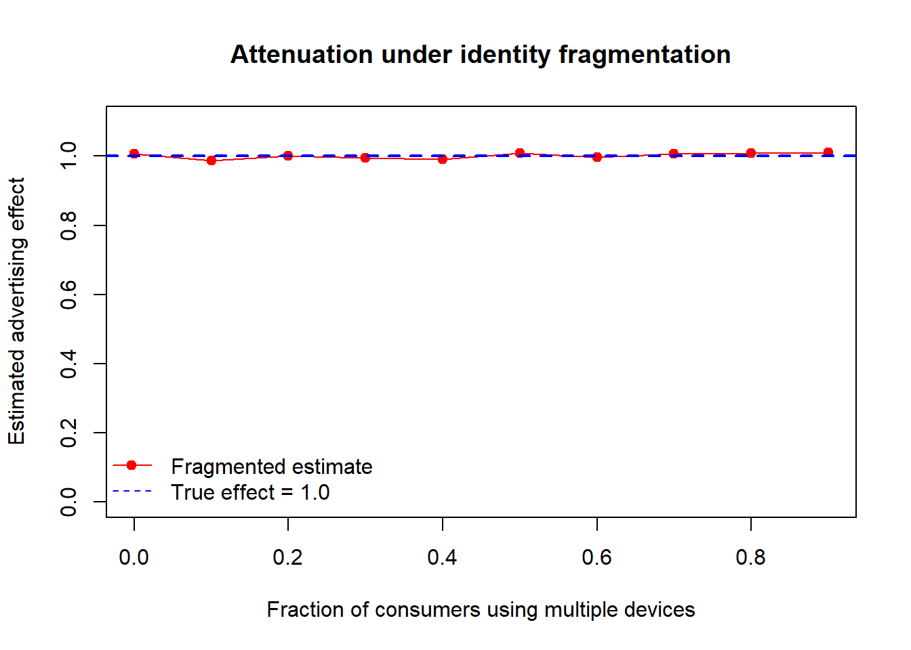

flowchart LR
S1((High\ncitability)) -- q11 --> S1
S1 -- q12 --> S2((Low\ncitability))
S2 -- q21 --> S1
S2 -- q22 --> S2
S1 -. state-dependent .-> Y["Latent propensity\ny* = x'β_S + ε"]
S2 -. state-dependent .-> Y
Y -- "max(0, y*)" --> C["Observed\ncitations y"]
Appendix A — Selected Topics in Marketing Strategy and Measurement
The chapters that precede this one each develop a single construct in depth. This one is deliberately broader. It collects a set of problems that are central to marketing science yet do not belong to any one substantive domain: how scholarly knowledge itself diffuses and accrues influence; how measurement breaks down when the unit of observation fractures across devices; how the marketing function earns and loses power inside the firm; and how a firm’s resources condition the returns to the marketing actions it takes. What unites them is a methodological posture rather than a topic. Each is, at bottom, an identification problem—an attempt to recover a causal or latent quantity from data that were not generated by a clean experiment—and each rewards the same discipline: state the estimand, write down the model that maps it to observables, and be explicit about the assumption whose failure would invalidate the answer.
The reader who finishes this chapter should be able to (i) reason about latent, time-varying drivers of an outcome using a hidden-state formalism; (ii) diagnose and sign the biases that cross-device identity fragmentation injects into advertising-effect estimates; (iii) connect organizational structure—the power of the marketing department, the mix of firm capabilities—to financial performance through mediation and contingency arguments; and (iv) frame the resource–deployment interaction that determines whether a given marketing action pays off. Throughout, intuition leads and the formalism follows in full, as the house style requires.
A.1 The Citability of Research: Influence as a Latent, Dynamic State
Marketing scholars spend their careers producing a product—published research—and then compete for its adoption by other scholars. Citations are the revealed-demand data for that product, and the question of why some papers are cited and others are not is a marketing question in the most literal sense. The overt drivers are familiar: the prestige of the journal, the substance of the article, the standing of the authors, and the self-reinforcing “Matthew effect” by which early advantage compounds into later advantage. Li, Sivadas, and Johnson (2015) argue that these observables miss a latent driver, which they name citability: the time-varying degree to which an article is relevant and relatable to its field, and hence the propensity with which the field draws on it.
The key word is time-varying. A paper’s influence is not a fixed attribute stamped at publication; it evolves as the field’s attention shifts, as complementary work appears, and as the article’s ideas move into or out of fashion. Modeling this requires a construct that is (a) unobserved, (b) dynamic, and (c) coupled to a count outcome—annual citations—that is frequently zero. The zeros are not incidental. A large share of articles go uncited in any given year, and a model that cannot represent uncitedness will misattribute those zeros to low intrinsic quality rather than to a transient low-citability state.
A.1.2 From Influence to Relevance
Citability concerns influence within the academic field. A distinct and equally strategic question is whether marketing scholarship is relevant outside it—to practice. Jedidi et al. (2021) operationalize this with an index of relevance to marketing, R2M, that scores publications on their relevance to practitioners along two dimensions, the topic addressed and the time horizon over which it matters. Read together, the two constructs partition the value of a marketing paper into an internal coordinate (influence on other scholars, captured by citability) and an external one (usefulness to managers, captured by R2M). The pairing is a useful reminder that “impact” is not a scalar: a paper can score high on one axis and low on the other, and the field’s incentive structure determines which axis researchers optimize.
A.2 Measurement Under Identity Fragmentation
Causal measurement in marketing presumes that the analyst can match a treatment (an ad exposure) to an outcome (a purchase) at the level of a single decision maker. Modern digital reality violates that premise. A consumer browses on a phone, researches on a laptop, and buys on a tablet, and absent perfect cross-device linkage the analyst observes three identities where there is one person. Lin and Misra (2022) shows that this identity fragmentation is not a nuisance to be waved away but a structured source of bias that contaminates the very advertising-effect estimates marketing most cares about. The contribution is to decompose the bias into three mechanically distinct channels and to state, for each, the exact condition under which it vanishes.
A.2.1 Three Channels of Bias
The first channel is outcome fragmentation, which produces classical attenuation. When one person’s two devices are counted as two identities, the total purchase outcome is unchanged but is now spread across an artificially inflated number of observations. The measured per-identity outcome is therefore a shrunken version of the truth, and any regression of outcome on exposure inherits the shrinkage. The disquieting implication is that this bias disappears only when the true effect is itself zero: for any genuine advertising effect, outcome fragmentation guarantees that the estimate is biased toward null.
The second channel is exposure fragmentation, which behaves like omitted variable bias. The estimand of interest is the effect of a consumer’s total cross-device exposure, but the fragmented data condition only on within-device exposure, omitting the consumer’s exposures on her other devices. The omitted cross-device exposure is correlated with both the included exposure and the outcome, so the coefficient is biased. This bias vanishes only under the implausible exclusion restriction that exposure on one device never influences purchase on another—a condition that the entire premise of cross-channel advertising denies.
The third channel is spurious covariance, which arises from device-level activity bias: consumers systematically use different devices for different stages of the funnel—browsing on one, buying on another—so device usage is correlated with purchase propensity for reasons unrelated to advertising. Differential exposure levels and cross-device substitution then induce covariance between measured exposure and outcome that is not causal. Lin and Misra (2022) notes that estimating a separate model for each device type can purge the device-level activity-bias component of this channel, because within a device type the differential-usage confound is held fixed.
Code
frag <- data.frame(
Channel = c("Outcome fragmentation",
"Exposure fragmentation",
"Spurious covariance"),
`Statistical analogue` = c("Attenuation (measurement error)",
"Omitted-variable bias",
"Confounding via device-activity bias"),
`Vanishes only if` = c("True effect equals zero",
"No cross-device exposure spillover",
"Per-device models (removes activity bias)"),
check.names = FALSE
)
knitr::kable(frag)| Channel | Statistical analogue | Vanishes only if |
|---|---|---|
| Outcome fragmentation | Attenuation (measurement error) | True effect equals zero |
| Exposure fragmentation | Omitted-variable bias | No cross-device exposure spillover |
| Spurious covariance | Confounding via device-activity bias | Per-device models (removes activity bias) |
A.2.2 A Worked Illustration of Attenuation
The attenuation channel is sharp enough to demonstrate with a small simulation. Suppose advertising has a genuine positive effect on purchase. We generate person- level data, then fragment each person into two device-identities that split the person’s exposure and outcome, and compare the naive per-identity regression slope to the truth.
Code
set.seed(42)
simulate_attenuation <- function(frac_multi, n = 5000, beta_true = 1.0) {
exposure <- rpois(n, lambda = 4)
purchase <- beta_true * exposure + rnorm(n, sd = 2)
multi <- runif(n) < frac_multi # which people use two devices
# Each multi-device person is split into two identities sharing the totals.
id_exposure <- c(exposure[!multi],
exposure[multi] / 2, exposure[multi] / 2)
id_purchase <- c(purchase[!multi],
purchase[multi] / 2, purchase[multi] / 2)
coef(lm(id_purchase ~ id_exposure))[["id_exposure"]]
}
fracs <- seq(0, 0.9, by = 0.1)
slopes <- vapply(fracs, simulate_attenuation, numeric(1))
plot(fracs, slopes, type = "o", pch = 19, col = "red",
ylim = c(0, 1.1), xlab = "Fraction of consumers using multiple devices",
ylab = "Estimated advertising effect",
main = "Attenuation under identity fragmentation")
abline(h = 1.0, col = "blue", lwd = 2, lty = 2)
legend("bottomleft", bty = "n",
legend = c("Fragmented estimate", "True effect = 1.0"),
col = c("red", "blue"), pch = c(19, NA), lty = c(1, 2))
The estimate degrades monotonically as multi-device prevalence rises, exactly as the attenuation argument predicts.1 The lesson generalizes: any pipeline that treats device-identities as exchangeable for persons will under-report advertising effectiveness, and the under-reporting is worst in precisely the mobile-heavy, multi-screen segments that advertisers most want to reach.
A.2.3 Remedies and Their Failure Modes
Three remedies are available, each buying identification at a price. Identity linking—stitching device identities back into persons—is the first-best in principle but treacherous in practice: partially linked data can be worse than unlinked data, because a linkage that resolves some persons but not others introduces a new, selection-driven heterogeneity that can dominate the original bias. Experiment-based adjustment follows Coey and Bailey (2016), who recover the true effect from an experiment under the symmetric and independent exposures (SIE) assumption—that a consumer’s device-level exposures are exchangeable and independent. The estimator is clean when SIE holds, but Lin and Misra (2022) shows it remains biased whenever cross-device activity variation is present, because SIE is silent about differential device usage. Stratified aggregation offers a more robust, if coarser, route: first group consumers by geography, then bin each geographic group by combinations of demographic characteristics (e.g., age, gender, education), and estimate effects within bins where the fragmentation-inducing heterogeneity is approximately constant. The choice among the three is a bias–variance trade-off, and Lin and Misra (2022) is best read as a map of where each method’s identifying assumption breaks.
A.3 Marketing in the Firm: Power, Capabilities, and Performance
A second cluster of work asks how the marketing function fares inside the organization and whether its standing translates into firm value. The constructs are organizational—departmental power, firm-level capabilities, cross-functional relationships—but the empirical strategy is the financial-economics one of linking a marketing variable to long-run performance while ruling out confounds.
A.3.1 The Power of the Marketing Department
Feng, Morgan, and Rego (2015) track the power of the marketing department—its influence relative to other functions—across a cross-industry panel of 612 public U.S. firms from 1993 to 2008, using an objective metric rather than survey perceptions. Two findings stand out. First, marketing-department power rose materially over the period, against a prevailing narrative of marketing’s organizational decline. Second, and more consequentially, greater power predicts superior long-run total shareholder return more strongly than it predicts short-run return on assets (ROA)—the value of marketing influence accrues over horizons longer than a single fiscal year.
The mechanism is a mediation argument built on market-based assets. Power operates through two capability channels: long-run market-based-asset building and short-run market-based-asset leveraging. These capabilities partially mediate the effect of power on long-term shareholder value and fully mediate its effect on short-term ROA. The distinction matters for inference. Under the standard mediation logic, a fully mediated effect implies that, conditional on the capability channel, the direct path from power to ROA is statistically indistinguishable from zero—so the entire short-run benefit of marketing power runs through asset leveraging. A partially mediated effect leaves a residual direct path, indicating that long-run value creation has sources the measured capabilities do not capture. Identifying mediation credibly requires the usual assumptions—no unmeasured confounding of the power–mediator and mediator–outcome links, and correct temporal ordering—which panel structure helps but does not guarantee.
flowchart LR
P["Marketing-department\npower"] --> B["Market-based-asset\nbuilding (long-run)"]
P --> L["Market-based-asset\nleveraging (short-run)"]
B -->|partial mediation| SV["Long-run\nshareholder value"]
L -->|full mediation| ROA["Short-run\nROA"]
P -. residual direct path .-> SV
A.3.2 Capabilities and Growth as a Contingency
If power is one organizational asset, capabilities are another, and their returns are not additive. Feng, Morgan, and Rego (2017) study how three firm capabilities—marketing, research and development (R&D), and operations—interact to drive revenue and profit growth, using panel data on 612 public U.S. firms observed over 16 years across 60 industries, and framed by contingency theory: the value of a capability depends on its complements and on the environment.
The interaction structure is the substance. R&D capability amplifies the growth effect of marketing capability—innovation gives marketing something worth selling—whereas operations capability attenuates it, plausibly because an operations orientation tuned for efficiency sits in tension with the demand-expanding thrust of marketing. Crucially, these interaction signs are not fixed constants but vary with two boundary conditions: market munificence (the abundance of growth opportunities) and competitive dynamism (the volatility of the competitive environment). A formalism makes the contingency explicit. Let growth \(g_i\) for firm \(i\) depend on marketing (\(M\)), R&D (\(R\)), and operations (\(O\)) capabilities through
\[ g_i = \beta_M M_i + \beta_R R_i + \beta_O O_i + \gamma_{MR}\,(M_i R_i) + \gamma_{MO}\,(M_i O_i) + \mathbf{z}_i^{\top}\boldsymbol{\delta} + u_i, \tag{A.5}\]
where Feng, Morgan, and Rego (2017) find \(\gamma_{MR}>0\) and \(\gamma_{MO}<0\), and where the interaction coefficients are themselves modeled as functions of munificence and dynamism, \(\gamma_{MR}=\gamma_{MR}(\text{munificence},\text{dynamism})\). The managerial reading is direct: the optimal capability portfolio is environment-specific, and a firm that pairs marketing with R&D in a munificent market is exploiting a different complementarity than one defending share in a dynamic one. Identification here rests on the exogeneity of the interacted capabilities to the growth shock \(u_i\)—a strong assumption that the panel’s within-firm variation only partly relaxes.
A.3.3 Cross-Functional Coopetition
The capability story treats functions as inputs to be combined; Luo, Slotegraaf, and Pan (2006) asks how the relationships among them should be configured. Marketing’s interfaces with other departments are conventionally cast as either cooperative or competitive. Luo, Slotegraaf, and Pan (2006) breaks that dichotomy with coopetition: the simultaneous presence of cooperation and competition between functions. Drawing on data from mid-level managers and senior executives, the study finds that cross-functional coopetition raises both customer and financial outcomes—a result that runs against the intuition that internal competition is purely destructive.
The effect is not direct. It is channeled through market learning: coopetition generates the friction and information exchange that surface market intelligence, and that learning is what improves outcomes. Mediation through learning is the identifying claim, and it reframes internal competition as a knowledge-generating mechanism rather than a coordination failure—provided the competitive element remains coupled to a cooperative one rather than degenerating into pure rivalry.
A.5 Resources, Deployment, and the Returns to Marketing Action
The final cluster takes up the resource-based view (RBV) of the firm and asks a question the preceding clusters presuppose: given a firm’s resources, what determines whether its marketing actions actually pay off?
A.5.1 Planning Capability and a Productive Paradox
Strategy scholars have long debated whether formal planning helps or hinders, and the evidence is genuinely mixed. Slotegraaf and Dickson (2004) resolve part of the tension by viewing marketing-planning capability through the RBV and uncovering a paradox: a strong planning capability has two opposing consequences that can both improve performance. On one hand, good planning reduces the need for post-plan improvisation—execution follows the plan, and the firm avoids costly mid-course scrambling. On the other hand, it introduces process rigidity—a well-planned firm is less able to deviate when conditions change. The paradox is that each effect can be performance-enhancing in its own right: reduced improvisation lowers execution cost, while rigidity can protect a coherent strategy from value-destroying ad hoc revision. The net effect is therefore not signed a priori, which explains why the planning-performance literature reaches conflicting conclusions—it has been estimating a composite of two channels with opposite behavioral content.
A.5.2 Resources Condition the Returns to Deployment
Slotegraaf, Moorman, and Inman (2003) sharpen the central RBV question. Marketing research has tended to study either a firm’s resources or its strategic and tactical actions, but neither alone explains competitive advantage. The authors introduce market deployment—the specific marketing actions a firm takes (distribution pushes, couponing, and the like)—and ask how a firm’s resource base governs the return to deployment. The estimand is therefore an interaction: the marginal effect of an action on outcomes, as a function of the resources the firm brings to it.
Using a secondary-data design and a sequence of hierarchical regressions, they find that resources directly shape deployment returns, and that the sign depends on the type of resource. High levels of intangible marketing resources and technological resources enhance the success of deployment activities such as distribution and couponing. Higher levels of financial resources, by contrast, reduce the efficiency of those same activities—plausibly because financial slack dulls the discipline that makes deployment effective. A compact representation makes the interaction explicit. Let \(y_i\) be the outcome of a deployment action \(D_i\) for firm \(i\) holding a resource bundle \(\mathbf{r}_i\):
\[ y_i = \beta_0 + \beta_D D_i + \boldsymbol{\theta}^{\top}(\mathbf{r}_i \odot D_i) + \mathbf{r}_i^{\top}\boldsymbol{\phi} + \varepsilon_i, \tag{A.6}\]
where \(\odot\) denotes the element-wise product of the resource vector with the deployment intensity, and the interaction vector \(\boldsymbol{\theta}\) carries the result: positive entries for intangible marketing and technological resources, negative for financial resources. The managerial implication is that the same marketing action is not equally productive across firms—its return is contingent on the resource base—and that resource abundance is not uniformly good, since financial slack can erode the efficiency of execution.
A.6 Sustainability as a Brand-Level Action
A final, more focused result connects the resource-and-action theme to a salient contemporary lever. Olsen, Slotegraaf, and Chandukala (2014) study the brand-level consequences of introducing environmentally sustainable (“green”) new products—an increasingly common, resource-intensive marketing action—integrating social identity and framing theories. Estimating a three-stage least squares (3SLS) system over green product introductions from 75 brands during 2009–2012, they find that green launches can improve brand attitude, but that the magnitude is conditional. The volume of green-centric messaging, the product’s typology, and the credibility of the information source jointly determine how much attitude moves, and a brand’s strategic positioning together with its product category governs whether a green launch is undertaken at all. The 3SLS specification is the methodologically load-bearing choice: because the decision to introduce a green product and its effect on brand attitude are jointly determined, single-equation estimation would confound selection with effect, and the simultaneous-equations system is what restores identification of the attitude effect net of the selection into green launches.
A.7 Key Takeaways
- Latent dynamics need latent-state models. Article influence is a time-varying hidden state; a hidden-Markov Tobit (Equation A.1–Equation A.3) represents both the dynamics and the uncitedness that count regressions miss (Li, Sivadas, and Johnson 2015). Impact is two-dimensional once external relevance (R2M) is added (Jedidi et al. 2021).
- Identity fragmentation is structured bias, not noise. Its three channels— attenuation, omitted cross-device exposure, and device-activity confounding—each vanish only under a specific, often implausible, condition, and partial identity linking can make matters worse (Lin and Misra 2022; Coey and Bailey 2016).
- Marketing’s organizational standing is priced. Department power predicts long-run shareholder value through market-based-asset capabilities (Feng, Morgan, and Rego 2015); capability returns are contingent and interactive (Feng, Morgan, and Rego 2017); and cross-functional coopetition pays off through market learning (Luo, Slotegraaf, and Pan 2006).
- Share and customer decisions reach the stock market through mechanisms. Market power and quality signaling—not efficiency—carry the share–profit link (Bhattacharya, Morgan, and Rego 2022), and unprofitable-customer management is read by investors as a signal whose reception depends on its form (Feng, Morgan, and Rego 2020).
- Resources condition the returns to action. Planning capability cuts both ways (Slotegraaf and Dickson 2004); intangible and technological resources lift deployment returns while financial slack erodes them (Slotegraaf, Moorman, and Inman 2003); and green-product effects are identified only once selection into launching is modeled jointly (Olsen, Slotegraaf, and Chandukala 2014).
Bhattacharya, Abhi, Neil A Morgan, and Lopo L Rego. 2022. “Examining Why and When Market Share Drives Firm Profit.” Journal of Marketing 86 (4): 73–94.
Coey, Dominic, and Michael Bailey. 2016. “People and Cookies.” Proceedings of the 25th International Conference on World Wide Web, April. https://doi.org/10.1145/2872427.2882984.
Feng, Hui, Neil A Morgan, and Lopo L Rego. 2015. “Marketing Department Power and Firm Performance.” Journal of Marketing 79 (5): 1–20.
———. 2017. “Firm Capabilities and Growth: The Moderating Role of Market Conditions.” Journal of the Academy of Marketing Science 45: 76–92.
———. 2020. “The Impact of Unprofitable Customer Management Strategies on Shareholder Value.” Journal of the Academy of Marketing Science 48: 246–69.
Jedidi, Kamel, Bernd H. Schmitt, Malek Ben Sliman, and Yanyan Li. 2021. “R2M Index 1.0: Assessing the Practical Relevance of Academic Marketing Articles.” Journal of Marketing 85 (5): 22–41. https://doi.org/10.1177/00222429211028145.
Li, Shibo, Eugene Sivadas, and Mark S Johnson. 2015. “Explaining Article Influence: Capturing Article Citability and Its Dynamic Effects.” Journal of the Academy of Marketing Science 43: 52–72.
Lin, Tesary, and Sanjog Misra. 2022. “Frontiers: The Identity Fragmentation Bias.” Marketing Science 41 (3): 433–40. https://doi.org/10.1287/mksc.2022.1360.
Luo, Xueming, Rebecca J Slotegraaf, and Xing Pan. 2006. “Cross-Functional ‘Coopetition’: The Simultaneous Role of Cooperation and Competition Within Firms.” Journal of Marketing 70 (2): 67–80.
Olsen, Mitchell C, Rebecca J Slotegraaf, and Sandeep R Chandukala. 2014. “Green Claims and Message Frames: How Green New Products Change Brand Attitude.” Journal of Marketing 78 (5): 119–37.
Slotegraaf, Rebecca J, and Peter R Dickson. 2004. “The Paradox of a Marketing Planning Capability.” Journal of the Academy of Marketing Science 32 (4): 371–85.
Slotegraaf, Rebecca J, Christine Moorman, and J Jeffrey Inman. 2003. “The Role of Firm Resources in Returns to Market Deployment.” Journal of Marketing Research 40 (3): 295–309.
The simulation splits each multi-device person’s exposure and outcome evenly across her two identities. Uneven splits, or splits correlated with the outcome, additionally activate the spurious-covariance channel; the even split isolates the pure attenuation effect.↩︎